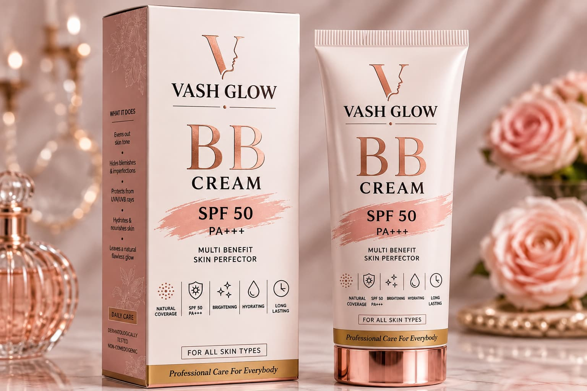

BB Cream vs Sunscreen: What’s the Difference? Do You Need Both?
If your BB cream already contains SPF, do you still need a separate sunscreen?
It is a common skincare question, especially for people who prefer a simple routine with fewer products. The answer depends on your product, how much you apply, and the level of sun exposure you experience.
BB cream and sunscreen have different primary purposes. BB cream helps create a more even-looking complexion, while sunscreen is designed primarily to protect the skin from ultraviolet (UV) radiation.
Understanding the difference can help you make informed skincare choices without compromising either your preferred finish or your sun-protection routine.
What Is BB Cream?
BB cream, commonly known as Beauty Balm or Blemish Balm, is a multifunctional complexion product that combines cosmetic coverage with additional benefits depending on its formulation.
A BB cream may help:
- Even out the appearance of skin tone.
- Provide light coverage for visible imperfections.
- Create a smoother, more uniform-looking complexion.
- Offer moisturising or other skincare benefits, depending on its ingredients.
- Provide labelled SPF protection if the finished product has been appropriately tested and rated.
BB cream is a convenient option for people who prefer a natural-looking finish without applying a full-coverage foundation.
However, formulations differ. Coverage, hydration, skin feel and sun protection depend on the individual product, so always check its label and directions.
What Is Sunscreen?
Sunscreen is formulated primarily to help protect the skin against ultraviolet radiation.
UVA and UVB rays affect the skin in different ways. UV exposure contributes to sunburn, premature skin ageing and other forms of skin damage.
When choosing a sunscreen for everyday protection, look for a broad-spectrum product with SPF 30 or higher. Water resistance may also be useful for activities involving sweating or swimming, provided the product label specifies it.
Sunscreen is not intended to provide the same cosmetic coverage as BB cream, although tinted sunscreens are also available.
The most important factors are choosing an appropriate product, applying enough of it and following its directions for reapplication.
BB Cream vs Sunscreen: What Is the Difference?
1. Primary Purpose
BB Cream: Primarily provides cosmetic coverage and may offer additional skincare benefits.
Sunscreen: Primarily helps protect the skin against UV radiation.
2. Coverage and Finish
BB Cream: Helps create a more even-looking complexion and can reduce the appearance of minor visible imperfections.
Sunscreen: Usually focuses on protection rather than coverage, although some formulas are tinted.
3. SPF Protection
BB Cream: May provide SPF protection when the finished product has a verified SPF rating. The protection achieved depends on applying the appropriate amount.
Sunscreen: Is specifically designed for sun protection and should be applied according to its label.
4. Everyday Convenience
BB Cream: Useful when you want complexion coverage in a simple routine.
Sunscreen: Important when your skin needs protection from UV exposure, including during outdoor activities.
5. Reapplication
BB Cream: Reapplying makeup throughout the day may affect your desired finish.
Sunscreen: When outdoors, sunscreen generally needs reapplication approximately every two hours and after swimming or heavy sweating, according to its directions.
Can BB Cream Replace Sunscreen?
Not automatically.
A BB cream with SPF can contribute to sun protection, but the level of protection you receive depends on the product’s tested formulation, the amount applied and how evenly it covers the skin.
People often apply BB cream more sparingly than sunscreen because they want a lightweight, natural-looking finish. Applying less than the amount used during SPF testing may reduce the protection achieved.
For reliable sun protection, especially during extended outdoor exposure, use a suitable broad-spectrum sunscreen as directed. You can apply BB cream afterwards if you want additional complexion coverage.
Remember that sunscreen is only one part of sun protection. Seeking shade and wearing protective clothing can also help reduce UV exposure.
Should You Apply Sunscreen Before BB Cream?
If you use both products, a practical application order is:
- Cleanse. Gently cleanse your skin and pat it dry.
- Moisturise. Apply your usual moisturiser if your skin needs it.
- Apply sunscreen. Apply a suitable broad-spectrum sunscreen evenly and in the recommended amount. Follow its label for application timing.
- Allow it to set. Give the sunscreen time to settle according to its instructions.
- Apply BB cream. Apply BB cream gently over the sunscreen to achieve your preferred level of coverage. Avoid rubbing or mixing the two products together.
Do not reduce the recommended amount of sunscreen simply because your BB cream also contains SPF.
Which One Should You Choose?
If You Prefer a Natural-Looking Finish
BB cream may be a useful option if you want light coverage and a more even-looking complexion. Choose a formulation that suits your preferences and check the product label for its intended use.
If You Spend Time Outdoors
Choose a broad-spectrum sunscreen with SPF 30 or higher and follow its application and reapplication directions. BB cream can be applied afterwards for additional coverage.
If You Want a Simple Routine
A practical skincare routine does not have to involve numerous products. Choose products according to your needs, your preferred finish and your level of sun exposure.
The key is to understand what each product is designed to do rather than expecting one product to perform every function.
Discover Vash Glow BB Cream

Complexion Coverage with a Refined Everyday Finish
Vash Glow BB Cream is designed as a multifunctional complexion product, combining a cosmetic finish with the features stated on its product packaging.
Its white and rose-gold presentation reflects the brand’s premium aesthetic, making it an option for customers who prefer a polished, simple complexion routine.
When choosing a BB cream, consider:
- Whether the coverage and finish suit your preferences.
- Whether the formulation is appropriate for your skin.
- The ingredients and directions provided with the product.
- The product’s verified SPF information, if sun protection is stated on the label.
Explore Vash Glow BB Cream to review the product details and directions for use.
Explore BB CreamComplete Your Routine with Vash Glow Sun Defense Cream
BB cream and dedicated sunscreen serve different purposes. If you want complexion coverage as well as sun protection, choose each product for its intended role.

Sun Defense Cream
Explore Vash Glow Sun Defense Cream for its ingredients, directions and verified sun-protection information.
Apply sunscreen according to its label, and reapply as directed when outdoors. BB cream should not be used as a reason to apply less sunscreen.
Explore Sun Defense CreamFrequently Asked Questions
Can BB cream replace sunscreen?
Not automatically. BB cream may contain SPF, but the amount typically used for cosmetic coverage may not provide the full labelled protection. Use a suitable sunscreen as directed when sun protection is needed.
Should I apply sunscreen before BB cream?
Yes. Apply sunscreen after skincare and before BB cream. Allow it to settle according to its instructions, then apply BB cream gently.
Is SPF 50 in BB cream enough?
The SPF number alone does not guarantee the level of protection you receive in everyday use. Protection depends on the product’s tested formulation and applying an adequate amount. Do not assume that a thin layer provides the full labelled SPF.
Can I use BB cream and sunscreen together?
Yes. Apply sunscreen first, then BB cream. Avoid mixing the products together or reducing the recommended amount of sunscreen.
How often should I reapply sunscreen?
When outdoors, reapply approximately every two hours and after swimming or heavy sweating, following the product directions.
Do I need sunscreen on cloudy days?
Yes, UV radiation can still reach your skin through clouds. Consider your exposure and use suitable sun protection when outdoors.
Is BB cream suitable for every skin type?
Suitability depends on the specific formulation and individual skin needs. Check the ingredients and product directions, and discontinue use if irritation occurs. Seek professional advice if you experience a persistent skin reaction.
Where can I find Vash Glow product details?
Visit the relevant Vash Glow product page to review available product information, ingredients, directions, precautions and ordering details.
Final Takeaway
BB cream and sunscreen are not interchangeable products.
BB cream helps create a more even-looking complexion, while sunscreen is designed primarily for UV protection. When you want both cosmetic coverage and sun protection, use each product for its intended purpose.
A thoughtful skincare routine is not about using the most products. It is about choosing appropriate products, understanding their benefits and using them correctly.
Discover Vash Glow Dermaceuticals and build a skincare routine that fits your needs.